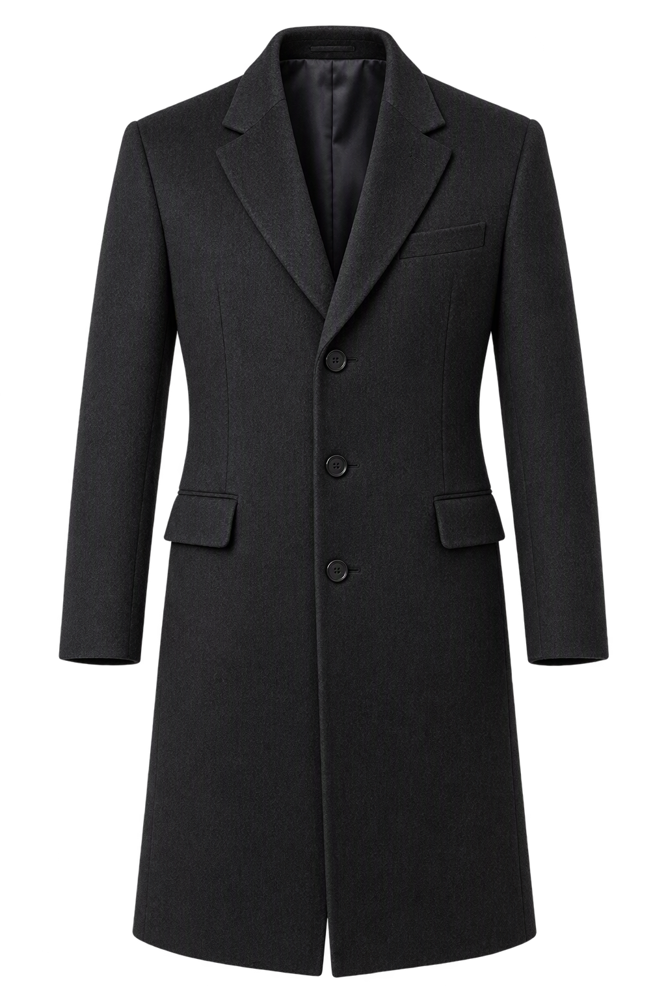
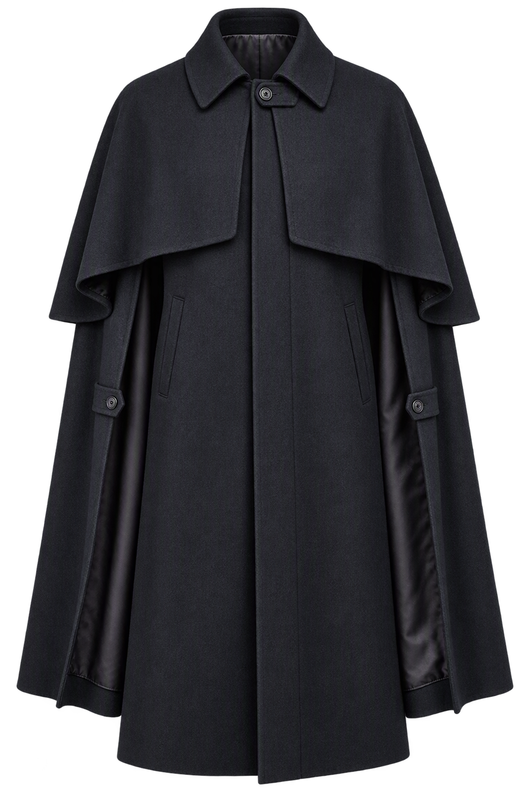
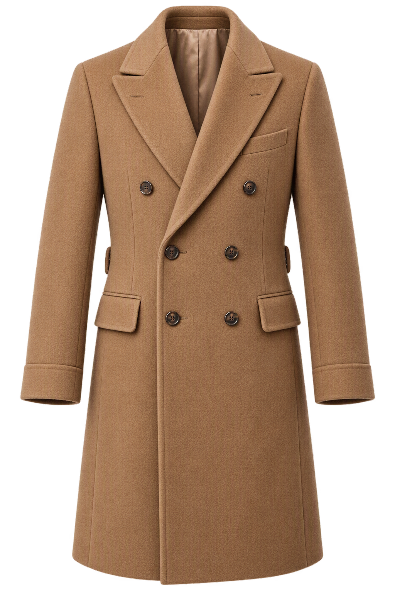
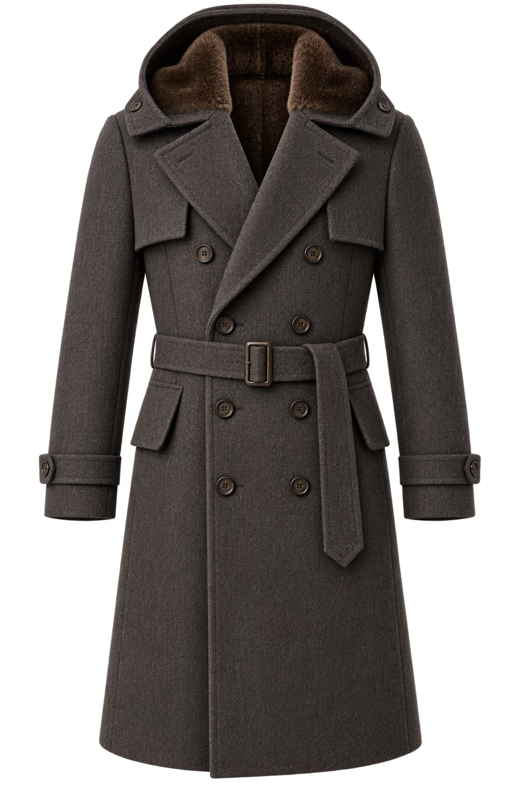
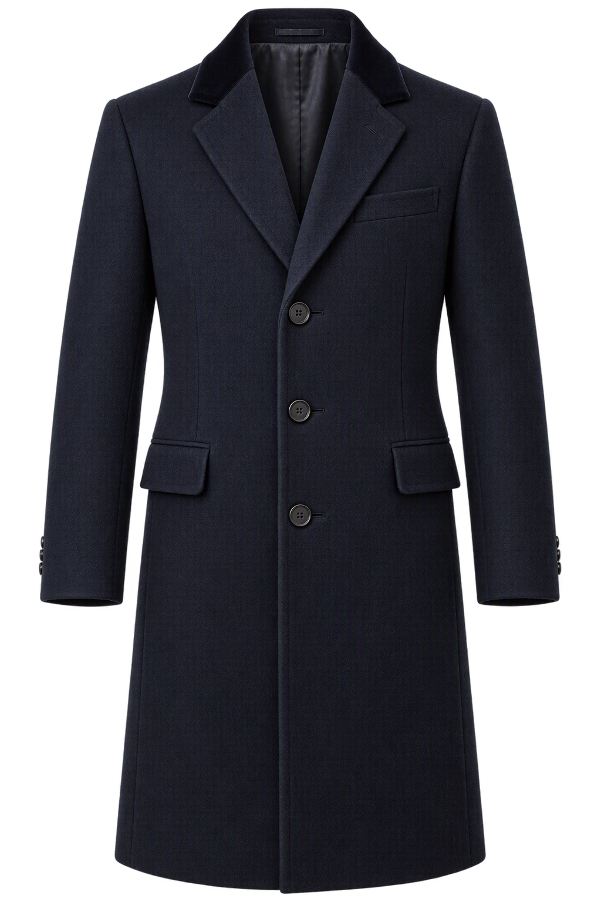
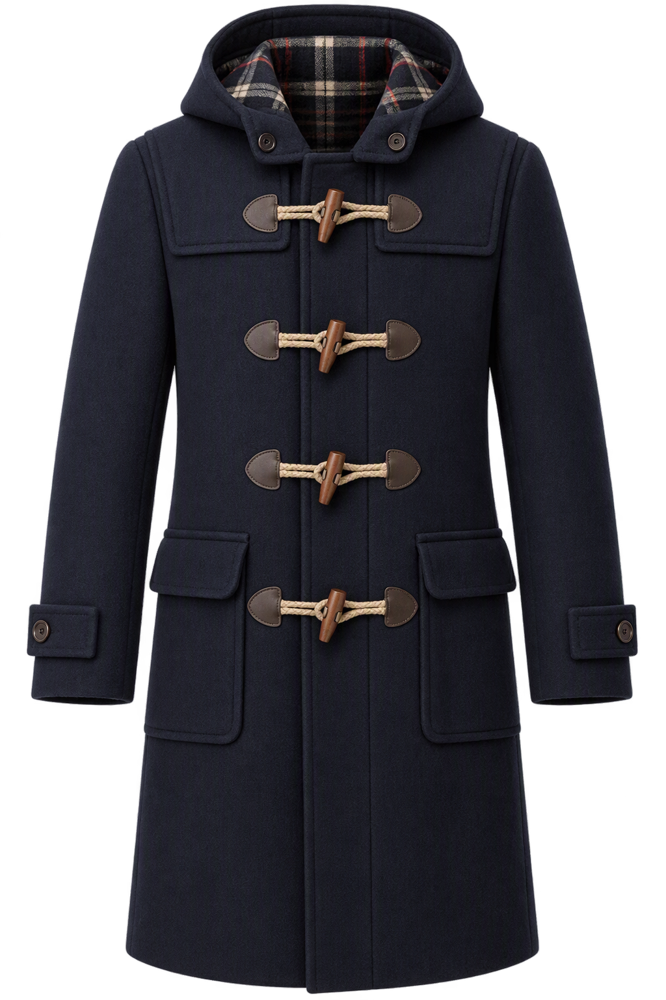
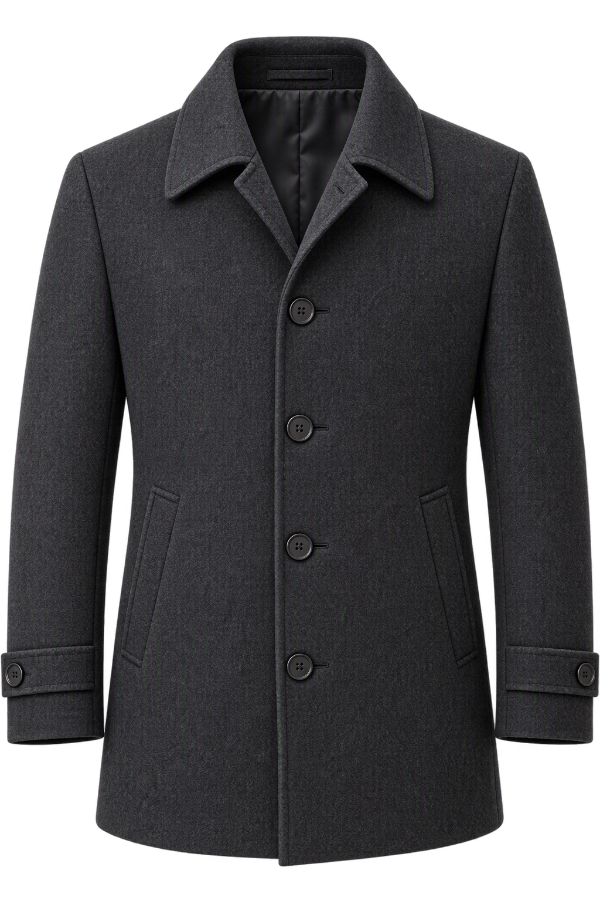

Chesterfield
3,500 GTQ
Descripción
El abrigo de caballero por excelencia: línea sobria, cuello de terciopelo y una caída impecable que acompaña cualquier traje formal.
Características
- Lana virgen de peso medio
- Cuello de terciopelo y botonadura oculta
- Forro de viscosa con bolsillo interior

Inverness Cape
11,500 GTQ
Descripción
Capa de gala de herencia victoriana con esclavina, pensada para las noches de ópera y los grandes eventos.
Características
- Tweed de lana italiana
- Esclavina desmontable
- Cierre con botones forrados

Peacoat de Gala
11,999 GTQ
Descripción
Reinterpretación refinada del clásico marinero, con doble botonadura y silueta entallada para vestir de noche.
Características
- Paño de lana y cachemira
- Botones dorados grabados
- Solapa ancha y forro acolchado

Polo Coat
17,000 GTQ
Descripción
Abrigo cruzado en tono camel con cinturón, símbolo de elegancia atemporal y confección artesanal.
Características
- Lana camel de doble faz
- Cinturón y puños con pespunte
- Bolsillos de parche reforzados

Trench Coat
4,800 GTQ
Descripción
Gabardina de inspiración militar con hechuras modernas: resistente a la lluvia y de porte elegante.
Características
- Gabardina de algodón impermeable
- Trabilla y canesú en la espalda
- Cinturón con hebilla metálica

Ulster Coat
9,200 GTQ
Descripción
Abrigo robusto de solapa ancha y espalda con cinturón, ideal para los inviernos más rigurosos.
Características
- Tweed de lana de alto gramaje
- Cuello alto convertible
- Cinturón posterior ajustable

Crombie
13,500 GTQ
Descripción
Abrigo recto de paño con cuello de terciopelo, sobrio y distinguido, de tradición británica.
Características
- Paño de lana tupida
- Pespunte en el borde de la solapa
- Forro de seda con bolsillo oculto

Duffle Coat
7,800 GTQ
Descripción
El clásico de capucha y cierres de toggle, reinterpretado en materiales de lujo para el día a día.
Características
- Lana boiled de alto gramaje
- Botones de cuerno y cuero
- Capucha forrada

Raglan Coat
8,900 GTQ
Descripción
Corte de manga raglán que ofrece libertad de movimiento y una silueta fluida sin perder formalidad.
Características
- Lana peinada de caída suave
- Mangas raglán sin costura de hombro
- Bolsillos de ojal discretos

Guard's Coat
14,200 GTQ
Descripción
Abrigo cruzado de inspiración militar con doble fila de botones y una presencia imponente.
Características
- Paño de lana de pura calidad
- Doble botonadura con tirillas en los hombros
- Forro completo de cachemira

Car Coat
6,500 GTQ
Descripción
Abrigo corto pensado para moverse con comodidad: sobrio, ligero y perfecto para la ciudad.
Características
- Mezcla de lana y seda
- Largo a media pierna
- Cierre frontal con botonadura oculta

Vicuña Overcoat
45,000 GTQ
Descripción
La pieza más exclusiva de la casa, confeccionada con fibra de vicuña, la más fina del mundo.
Características
- 100% fibra de vicuña
- Confección artesanal a mano
- Numeración y certificado de autenticidad

Jacquard
1,800 GTQ
Descripción
Tejido jacquard con un motivo sutil en relieve que juega con la luz en cada movimiento.
Características
- Algodón jacquard de doble hilo
- Cuello clásico con varillas
- Botones de nácar

Oxford Clásica
950 GTQ
Descripción
La camisa de oficina por excelencia, de tejido texturizado y comodidad duradera.
Características
- Algodón Oxford 100%
- Cuello button-down
- Corte regular

Pinpoint Oxford
1,200 GTQ
Descripción
Tejido fino y resistente con acabado liso, entre la formalidad y el confort.
Características
- Algodón pinpoint de trama ajustada
- Puños con un botón
- Costuras reforzadas

Popelina Egipcia
2,100 GTQ
Descripción
Popelina confeccionada con algodón egipcio de fibra extralarga, suave y de brillo discreto.
Características
- Algodón egipcio de fibra larga
- Acabado mercerizado
- Botones de nácar natural

Franela de Lana
1,600 GTQ
Descripción
Camisa cálida de franela de lana, ideal para temporadas frías sin renunciar a la elegancia.
Características
- Franela de lana merino
- Tacto suave y cepillado
- Cuello semi-italiano

Sea Island Cotton
3,500 GTQ
Descripción
Elaborada con uno de los algodones más raros y delicados del mundo, de tacto sedoso.
Características
- Sea Island Cotton de origen caribeño
- Hilo de ultrafina densidad
- Ojales cosidos a mano

Chambray
1,100 GTQ
Descripción
Camisa ligera de aire casual refinado, en azul suave y con gran frescura.
Características
- Algodón chambray lavado
- Tejido transpirable
- Bolsillo de pecho con pespunte

Twill Satinada
1,400 GTQ
Descripción
Tejido en sarga con acabado satinado que aporta un brillo noble y una excelente caída.
Características
- Algodón twill satinado
- Caída fluida y sedosa
- Resistente a las arrugas

Cuello Mao
1,300 GTQ
Descripción
Diseño sin cuello tradicional que combina modernidad y sofisticación.
Características
- Algodón de popelina fina
- Cuello mao de tira baja
- Pliegue frontal oculto

Cuello Italiano
1,500 GTQ
Descripción
Cuello abierto y de aire relajado, característico de la sastrería italiana.
Características
- Algodón de tacto sedoso
- Cuello italiano de apertura amplia
- Entretela ligera y flexible

Doble Puño
1,900 GTQ
Descripción
Camisa de puños dobles, diseñada para lucir gemelos en las ocasiones más formales.
Características
- Algodón de doble hilo
- Puños franceses para gemelos
- Cuello clásico reforzado

Lino Irlandés
2,300 GTQ
Descripción
Lino puro de Irlanda: fresco, ligero y con la textura natural que distingue al lujo veraniego.
Características
- 100% lino irlandés
- Tejido transpirable y fresco
- Acabado lavado a la piedra

Calvary Twill
3,550 GTQ
Descripción
Pantalón de sarga de caballería, robusto y de estructura marcada.
Características
- Sarga de algodón de alta densidad
- Tiro alto con cintura ajustable
- Pespuntes en tono contrastado

Tuxedo Trousers
4,500 GTQ
Descripción
Pantalón de etiqueta con galón lateral de seda, indispensable en toda cita de gala.
Características
- Lana de textura ligera
- Galón de seda satinada
- Cintura sin trabillas

Gurkha Pants
6,800 GTQ
Descripción
Pantalón de cintura alta con cinturón integrado de doble hebilla, de origen militar.
Características
- Lana de pura calidad
- Cinturón lateral con doble hebilla
- Pinzas dobles

Pantalón de Vestir Italiano
3,900 GTQ
Descripción
Pantalón de sastre de caída recta y acabado impecable, con la elegancia de la tradición italiana.
Características
- Lana peinada italiana
- Cintura con pinzas
- Dobladillo a medida

Pantalón de Lana Fría
4,200 GTQ
Descripción
Lana ligera para temporadas cálidas: respira y conserva la forma durante todo el día.
Características
- Lana fría de alta torsión
- Resistente a las arrugas
- Forro parcial transpirable

Chino de Lujo
2,500 GTQ
Descripción
Chino de corte refinado en algodón pima, perfecto para una elegancia relajada.
Características
- Algodón pima con elastano
- Corte slim moderado
- Bolsillos laterales y de ojal

Pantalón de Pana
2,800 GTQ
Descripción
Pana de cordón fino, cálida al tacto y con una sutil textura vertical.
Características
- Pana de algodón de cordón fino
- Corte recto clásico
- Cierre de botón y gancho interior

Mezclilla Premium
3,200 GTQ
Descripción
Mezclilla japonesa tejida en telares tradicionales, de tono profundo y lavado cuidado.
Características
- Denim japonés de 13 oz
- Remaches de latón envejecido
- Costuras en hilo dorado

Pantalón Palazzo
3,700 GTQ
Descripción
Pantalón amplio y fluido de pierna ancha que une comodidad y silueta sofisticada.
Características
- Crepé de lana y seda
- Caída fluida y amplia
- Cintura alta con cierre lateral

Pantalón de Pinza
3,100 GTQ
Descripción
Pantalón con pinzas de corte clásico y bolsillos amplios, atemporal y cómodo.
Características
- Lana de peso medio
- Doble pinza frontal
- Perneras de corte cónico

Pantalón de Sarga
2,900 GTQ
Descripción
Sarga de algodón de tejido diagonal, versátil y con presencia.
Características
- Sarga de algodón peinado
- Cintura con trabillas
- Acabado suave lavado

Pantalón de Lino Belga
3,400 GTQ
Descripción
Lino belga de trama firme, ligero y lleno de carácter, ideal para climas cálidos.
Características
- 100% lino belga
- Textura natural y fresca
- Forro frontal ligero

Gemelos de Oro
5,500 GTQ
Descripción
Par de gemelos en oro macizo con acabado pulido y grabado discreto.
Características
- Oro de 18 quilates
- Acabado pulido a espejo
- Estuche de presentación incluido

Corbata de Seda Italiana
1,200 GTQ
Descripción
Corbata de seda de Como, de textura suave y nudo perfecto.
Características
- 100% seda italiana
- Confección a mano
- Ancho clásico de 8 cm

Pañuelo de Bolsillo
600 GTQ
Descripción
Pañuelo de seda que aporta un toque de color al traje.
Características
- Seda pura
- Bordes enrollados a mano
- Estampado exclusivo

Cinturón de Cuero
1,800 GTQ
Descripción
Cinturón de cuero de becerro con hebilla dorada y elegancia sobria.
Características
- Cuero de becerro curtido al vegetal
- Hebilla de latón bañada en oro
- Ancho de 3.5 cm

Reloj de Vestir
12,000 GTQ
Descripción
Reloj de esfera minimalista y caja extrafina, con movimiento automático.
Características
- Movimiento automático suizo
- Caja de acero con baño de oro
- Cristal de zafiro

Sombrero Fedora
2,400 GTQ
Descripción
Sombrero de fieltro de lana con ala media y cinta de grosgrain.
Características
- Fieltro de pelo de conejo
- Cinta de grosgrain con lazo
- Banda interior de cuero

Guantes de Cuero
1,500 GTQ
Descripción
Guantes de cuero de cordero con forro de cachemira, suaves y cálidos.
Características
- Piel de cordero napa
- Forro de cachemira
- Costuras a mano

Bufanda de Cachemira
2,100 GTQ
Descripción
Bufanda de gran suavidad y abrigo, rematada con flecos delicados.
Características
- 100% cachemira mongola
- Tejido ligero y cálido
- Medidas de 180 x 30 cm

Broche de Corbata
900 GTQ
Descripción
Broche de pinza para corbata con acabado dorado y diseño discreto.
Características
- Latón con baño de oro
- Acabado satinado
- Pinza de apertura suave

Cartera de Cuero
1,300 GTQ
Descripción
Cartera con compartimentos para tarjetas y billetes, de líneas limpias.
Características
- Cuero de becerro de plena flor
- Seis ranuras para tarjetas
- Interior forrado en piel

Bastón de Caña
3,800 GTQ
Descripción
Bastón de caña natural con empuñadura de madera noble y porte clásico.
Características
- Caña de malaca natural
- Empuñadura de madera pulida
- Contera de latón

Pisacorbatas
700 GTQ
Descripción
Pisacorbatas de línea fina que mantiene la corbata en su lugar con elegancia.
Características
- Acero con acabado dorado
- Sujeción firme sin marcas
- Longitud de 5 cm